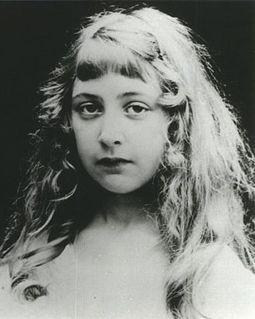

|
|
| Author: | Agatha Christie |
| Country: | United Kingdom. |
| Language: | English. |
| Genre: | Crime novel. |
| Publisher: | Dodd, Mead and Company. |
| Publication date: | March 1949. |
| Media type: | Print (hardback & paperback). |
| Pages: | 211 pp (first edition, hardback). |
Crooked House:
Crooked House is a work of detective fiction by Agatha Christie
first published in the US by Dodd,
Mead and Company in March 1949 and in the UK
by the Collins Crime Club on 23 May of the same year.
The action takes place in and near London in the autumn of 1947.
Christie said this and Ordeal by
Innocence were her favourites amongst her own works.
Contents
1- Plot introduction.
2- Plot summary.
3- Characters.
4- Information about
Agatha Christie.
5- about film..
Plot introduction:
Three generations of the Leonides family live together under wealthy patriarch Aristide. His first wife died; her sister Edith has cared for the household since then. His second wife is the indolent Brenda, decades his junior, suspected of having a clandestine love affair with the grandchildren's tutor. After Aristide is poisoned by his own eye medicine (eserine), his granddaughter Sophia tells narrator and fiancé Charles Hayward that they cannot marry until the killer is apprehended. Charles's father, "The Old Man", is the Assistant Commissioner of Scotland Yard, so Charles investigates from the inside along with assigned detective, Chief Inspector Taverner.
Plot summary:
Towards the end of the Second World War, Charles Hayward is in Cairo and falls in love with Sophia Leonides, a smart, successful Englishwoman who works for the Foreign Office. They put off getting engaged until the end of the war when they will be reunited in England.
Hayward returns home and reads an obituary in The Times: Sophia's grandfather, the wealthy entrepreneur Aristide Leonides, has died, aged 85. Due to the war, the whole family has been living with him in a sumptuous but ill-proportioned house called "Three Gables"–the 'crooked house' of the title. The autopsy reveals that Leonides was poisoned with his own eserine-based eye medicine via an insulin injection. Sophia tells Charles that she can't marry him until the matter is cleared up.
The obvious suspects are Brenda Leonides, Aristide's much younger second wife, and Laurence Brown, a conscientious objector who has been living in the house as private tutor to Sophia's younger brother and sister, Eustace and Josephine. They are rumoured to have been carrying on an illicit love affair under old Leonides's nose. The family members hope these two prove to be the murderers because they despise Brenda as a gold digger and also hope to escape the scandal that a different outcome would bring. Charles agrees to help his father, an Assistant Commissioner of Scotland Yard, to investigate the crime. He becomes a house guest at Three Gables, hoping that someone might reveal a clue at an unguarded moment.
All the family members had motive and opportunity, none has an alibi, and each of them knew that Aristide's eye medicine was poisonous. According to the will, they all stand to gain a healthy bequest from the old man's estate. Aside from this, the family members have little in common. Edith de Haviland, Aristide's unmarried sister-in-law, is a brusque woman in her 70s who came to stay with him after his first wife's death to supervise his children's upbringing. Roger, the eldest son and Aristide's favourite, is a failure as a businessman. He has steered the catering business bestowed to him by his father to the brink of bankruptcy and he longs to live a simple life somewhere far away. Roger's wife Clemency, a scientist with austere and unsentimental tastes, has never been able to enjoy the wealth offered by her husband's family. Roger's younger brother, Philip, has suffered under his father's preference for Roger, and retreated into a distant world of books and bygone historical epochs, spending all his waking hours in the library. Philip's wife Magda is an only moderately successful actress to whom everything, even a family murder, is a stage show in which she wants to play a leading part. Sixteen-year-old Eustace has polio. He is handsome and intelligent, yet embittered by his disability. His twelve-year-old sister Josephine, on the other hand, is ugly, precociously intelligent, and obsessed with detective stories. She spies continually on the rest of the household, letting everyone know that she is writing down her observations in a secret notebook.
Leonides had secretly redrafted his will to leave everything to Philip's daughter Sophia. He believed that she alone had the strength of character to assume his place as the head of the family. Josephine, who had been bragging that she knows the killer's identity, is found lying unconscious in the yard from a blow to the head from a marble doorstop. Charles discovers a cache of incriminating love letters from Brenda to Laurence, and the two are arrested. While they are in custody, the children's nanny dies after drinking a digitalis-laced cup of cocoa that had apparently been intended for Josephine. The family realises that the killer is still among them.
Charles, afraid for Josephine's life, tries in vain to induce her to disclose the murderer's name. Edith de Haviland invites Josephine to come out with her in the car for an ice cream soda. The car drives over a cliff and both are killed. Back at Three Gables, Charles finds two letters from Miss de Haviland. One is a suicide note for Chief Inspector Taverner taking responsibility, although not explicitly confessing, to the murders of Aristide and Nanny. The second letter, intended for Sophia and Charles only, reveals the truth of the matter. Josephine was the murderer. As proof, de Haviland has enclosed the child's secret notebook, the first line of which reads "Today I killed grandfather".
Josephine killed her grandfather because he wouldn't pay for her ballet lessons; she then revelled in all the attention she received afterwards and planned her own assault with the marble doorstop as a way of diverting attention. She poisoned Nannie for encouraging Magda to send her to Switzerland, and also because Nannie called her a "silly little girl". She also included threats against Magda if her mother seriously considered sending her away. Miss de Haviland had discovered Josephine's notebook hidden in a dog kennel, and committed the murder-suicide car crash as she did not want Josephine to suffer in a prison or asylum if and when the police learned she was the murderer.
Characters:
- Charles Hayward, fiancé to Sophia Leonides, narrator.
- Sophia Leonides, daughter of Magda and Philip Leonides, granddaughter of Aristide.
- Brenda Leonides, spoiled much younger widow of Aristide Leonides.
- Magda West, a flamboyant stage actress.
- Edith de Haviland, Sophia's elderly spinster great-aunt, sister of Aristide Leonides' first wife, Marcia de Haviland.
- Roger Leonides, son of Aristide Leonides.
- Clemency Leonides, his wife, a scientist.
- Philip Leonides, Magda's husband and Roger's brother.
- Laurence Brown, tutor to Josephine and Eustace; in love with Brenda.
- Josephine Leonides, Magda's 12-year-old daughter.
- Eustace Leonides, Magda's son; brother of Sophia and Josephine.
- Janet Rowe, nanny to the Leonides children.
- Chief Inspector Taverner, Scotland Yard inspector assigned.
- "The Old Man", Sir Arthur Hayward, Assistant Commissioner of Scotland Yard, father of Charles Hayward.
Information about Agatha Christie
 |
 |
|
|
Agatha Christie:
Agatha Christie or Agatha Mary Clarissa (also known as Lady Mallowan), from September 15, 1890 to January 12, 1976,
is a writer She was also famous for writing crime novels,but also wrote romantic novels under the pseudonym Mary Westmacott.
She is the greatest author of crime novels in history, selling more than a billion copies of her novels that have been translated into more than 103 languages.
A film of this novel was made in 2017:

is called to decipher a heinous crime, with no one above suspicion,
including Sophia, who hired the investigator and his former lover.
Directed by: Jill Bucket Brenner (Director)
Author: Julian Filos (Screenplay and Dialogue) Agatha Christie (quoted from her novel).
| Business type: | film |
| Action Classification: | Drama Mystery Crime |
| Date of presentation: | [4 January 2018] |
| Control rating: | MPAAPG-13 |
| The language | English |
| Country of Production: | United Kingdom |